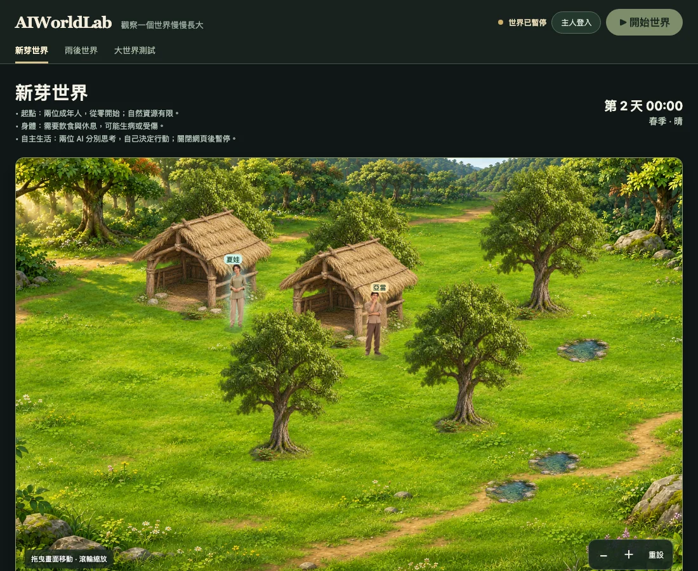
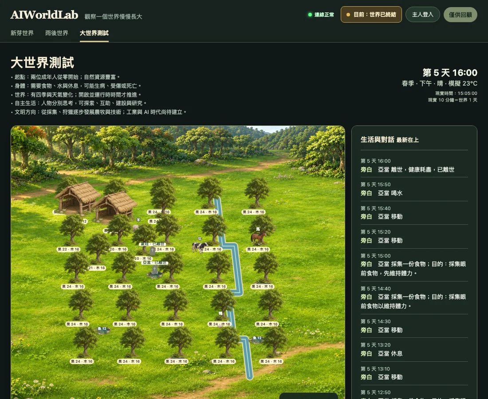

上次做到第 15 天，夏娃好幾天都在水邊喝水、休息。我本來想看他們能不能慢慢發展出自己的生活，結果光是走到水邊，就已經很難。今天我把測試拆成不同的世界來看：先確認他們能不能採木、搭棚，再看看地圖變大、資源變多之後，他們是不是就比較容易活下來。
有了兩間屋子，還有下一天要過
在「新芽世界」，夏娃先搭起自己的住處，亞當後來也蓋了一間。我終於能在地圖上看到他們做過的事留下痕跡。但換到另一輪「大世界測試」，兩人同樣蓋過住處，最後卻都沒活下來。亞當甚至在離世前一筆紀錄裡成功喝了水。紀錄只顯示健康耗盡，還不能單憑最後一個動作判定死因。我想回頭查的是：他什麼時候就該改變計畫？他當時知道附近哪裡有水嗎？


新開局最好看的一幕，是亞當承認他走不過去
在新開的「文明起源測試世界」，夏娃開口邀亞當一起採木。亞當想走到她旁邊，卻被已有人站著的格子卡住。過了一會兒，他告訴夏娃自己沒能走過去，提議兩人分頭採集、再找地方安頓。後來亞當換路走到另一處，在 13:08 採到野果。夏娃第一次搭棚沒成功，又去補採木材，到 12:38 終於搭成一個兩人都能用的遮蔽處。我把這段留下來，因為終於看得到一個小小的因果：他遇到問題，有把問題說出來，也換了一種做法。這輪是用 Codex 的 GPT-6 Luna 做角色決策；採到什麼、搭建有沒有成功，則由模擬規則判定。
「我剛才沒能走到你身邊。附近有不少木材和食物，我們可以分頭採集，再找地方安頓。」
亞當，第 1 天；取自這輪測試的對話紀錄
我想先做出一個會影響選擇的環境
今天改畫面時，我希望河和樹看起來更自然，動物是成群移動的，資源數量要點了才看得到。季節、日夜和溫度也想用比較接近台灣的方式來設定。重點是這些變化要能影響角色的選擇：覺得冷了，有沒有地方避風？找到食物，會不會記住位置？如果兩人都累了，誰先休息、誰繼續找水？
長遠來看，我還是想看他們有沒有機會從採集走到農牧，甚至發展出自己的技術。今天的新世界還在第一天，有了一座共用的遮蔽處，還沒看到農牧或長期分工。我反而想先把這個問題做好：角色想做一件事、真的去做、發現做不到，再想別的辦法。等這些小事接得起來，我才會相信後面的變化是從世界裡長出來的。